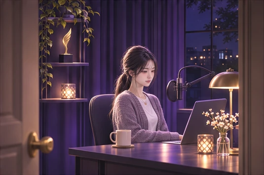

PUREDAY · OLLET
특별관
전편 이어보기
캐릭터 바이블
painter의 시선 갤러리
PUREDAY EPISODE · COMPLETE
퓨어데이 에피소드_
올렛편 특별관
마지막 인사에서 다음 목소리까지. 올렛의 이야기 16화, 회차당 75컷.
1화부터 끝까지 이어보기
회차 고르기

회차 선택
01화
마지막 인사
02화
막차
03화
새벽 다섯 시
04화
올렛 파이
05화
고교 동창
06화
빈 객석
07화
방송 30초 전
08화
제가 왜 문을 잠갔는지
09화
식기 전에
10화
같이 걸어요
11화
두 사람의 이야기
12화
다시 켜진 마이크
13화
남겨 둔 침묵
14화
대답하기 전에
15화
커튼 너머
16화
다음 목소리
작품 더 보기
출연진 · 캐릭터 바이블
painter의 시선 갤러리